class: middle # emergence-study: .footnote[arjun; <br>processing-community-day, <br> new-york, 2026.] --- class: middle center <figure> <img id = "white"src = "https://arjunmakesthings.github.io/itp-blog/z_images/Screenshot-2026-03-17-at-00.05.31.webp"> <figcaption>from <em>dynamics of complex systems</em>, by yaneer-bar-yam.</figcaption> </figure> --- class: middle left ## a system composed of simple parts where the collective behaviour is complex. -- .grey[(the outcome can't be determined by studying individual parts.)] --- class: middle <figure> <div class = "two"> <img id = "white" src="https://mdpi-res.com/cdn-cgi/image/quality=100/https://mdpi-res.com/processes/processes-10-02337/article_deploy/html/images/processes-10-02337-g006.png?1668590985"> <img id = "white" src="https://mdpi-res.com/cdn-cgi/image/quality=100/https://mdpi-res.com/processes/processes-10-02337/article_deploy/html/images/processes-10-02337-g007.png?1668591000"> </div> <figcaption>correlation of cellular automata & formation of snowflakes; from <a href = "https://www.mdpi.com/2227-9717/10/11/2337">this</a> article.</figcaption> </figure> --- class: middle <figure> <img id = "white" src = "https://mdpi-res.com/cdn-cgi/image/quality=100/https://mdpi-res.com/processes/processes-10-02337/article_deploy/html/images/processes-10-02337-g002.png?1668590994"> <figcaption>automata rules for snowflake dendrite formation; from <a href = "https://www.mdpi.com/2227-9717/10/11/2337">this</a> article.</figcaption> </figure> --- class: middle <figure> <img src = "https://images.unsplash.com/photo-1758270704763-22072a90d3b6?q=80&w=3731&auto=format&fit=crop&ixlib=rb-4.1.0&ixid=M3wxMjA3fDB8MHxwaG90by1wYWdlfHx8fGVufDB8fHx8fA%3D%3D"> <figcaption>group of friends; from <a href = "https://www.mdpi.com/2227-9717/10/11/2337">unsplash</a>.</figcaption> </figure> --- class: middle ## When I think about the world, I imagine a system — many organisms perpetually interact with one-another, each governed by its own set of rules, collectively unpredictable & complex; with the occasional sprinkle of universal noise. My artistic practice is wholly devoted towards the pursuit of understanding and representing this semi-ordered nature of the world. <figcaption>opening paragraph from <a href = "https://arjunmakesthings.github.io/notes/2024_itp-personal-statement/page.html">itp-personal-statement</a>, 2024.</figcaption> --- --- class: middle <figure> <img id = "white" src = "https://external-content.duckduckgo.com/iu/?u=https%3A%2F%2Fd29xw0ra2h4o4u.cloudfront.net%2Fassets%2Flogo_opengraph-2325537a191b8371ffd077b0aacee12e8183069b9997ce069d0ae484f4b8ed8c.png&f=1&nofb=1&ipt=ce8e662853fabf6bb635b70cb235edcd0bc8d8b9bffb208086d5f92f09a22751&ipo=images"> <figcaption>recurse-center logo.</figcaption> </figure> --- class: middle ## When I think about the world, I imagine a system — many organisms perpetually interact with one-another, each governed by its own set of rules, collectively unpredictable & complex; with the occasional sprinkle of universal noise. My artistic practice is wholly devoted towards the pursuit of understanding and representing this semi-ordered nature of the world. <figcaption>opening paragraph from <a href = "https://arjunmakesthings.github.io/notes/2024_itp-personal-statement/page.html">itp-personal-statement</a>, 2024.</figcaption> --- class: middle # emergence-study: .footnote[arjun; <br>processing-community-day, <br> new-york, 2026.] --- class: middle <figure> <figcaption>cell; state: 0 / dead / off.</figcaption> </figure> --- class: middle <figure> <figcaption>cell; state: 1 / alive / on.</figcaption> </figure> --- class: middle <figure> <figcaption>1-d cellular automata; from a new kind of science, by stephen wolfram.</figcaption> </figure> --- class: middle ``` js // define rule: const rule = { 0b111: 1, 0b110: 0, 0b101: 1, 0b100: 0, 0b011: 0, 0b010: 1, 0b001: 0, 0b000: 1, }; ``` <figcaption>rule-set.</figcaption> --- class: middle <figure> <figcaption>1-d cellular automata; from a new kind of science, by stephen wolfram.</figcaption> </figure> --- class: middle <figure> <img id = "white" src = "https://www.wolframscience.com/nks/img/inline/page1186b.png"> <figcaption>1-d cellular automata ruleset; from <a href = "https://www.wolframscience.com/nks/notes-12-10--minimal-cellular-automata-for-sequences/" target = "_blank">wolframscience</a>.</figcaption> </figure> --- class: middle <figure> <figcaption>cell; state: 0 / dead / off.</figcaption> </figure> --- class: middle <figure> <figcaption>cell; state: 1 / alive / on.</figcaption> </figure> --- class: middle left ```js function draw_zero(x, y) { //can be whatever you want: } function draw_one(x, y) { //can be whatever you want: } ``` --- class: middle <figure> <p>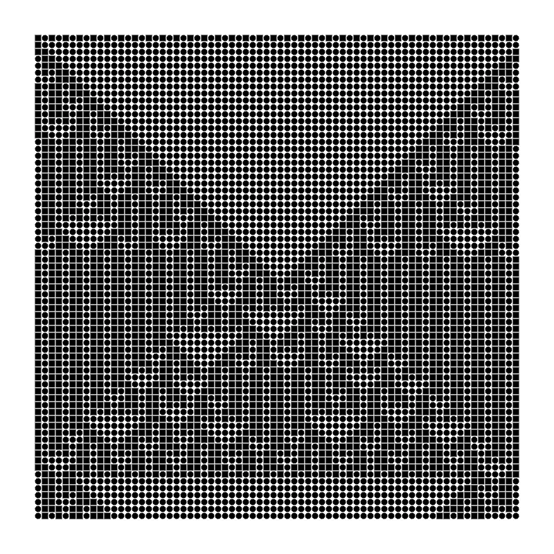</p> <figcaption>1-d cellular automata; same-rules; interpretation-1.</figcaption> </figure> --- class: middle <figure> <p>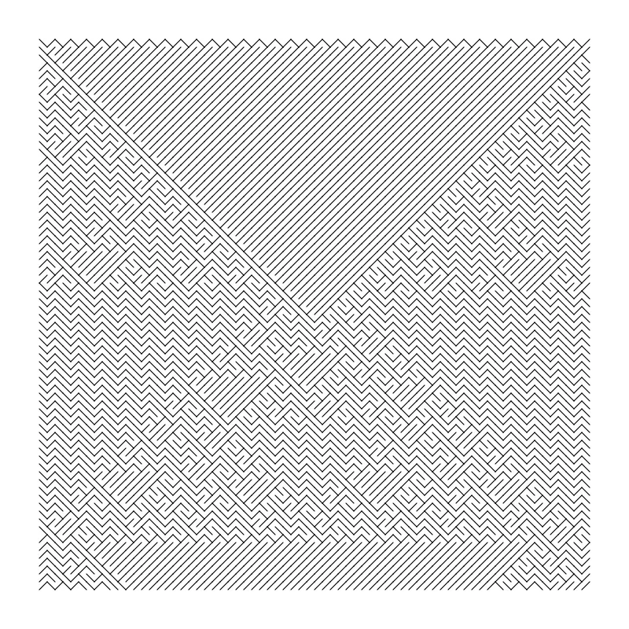</p> <figcaption>1-d cellular automata; same-rules; interpretation-2.</figcaption> </figure> --- class: middle <figure> <p>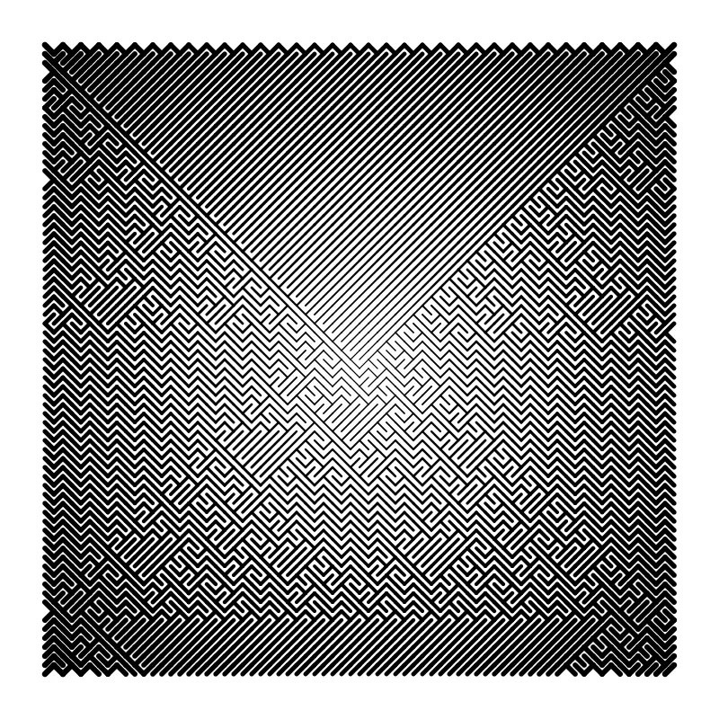</p> <figcaption>1-d cellular automata; same-rules; interpretation-3.</figcaption> </figure> --- class: middle <figure> <p>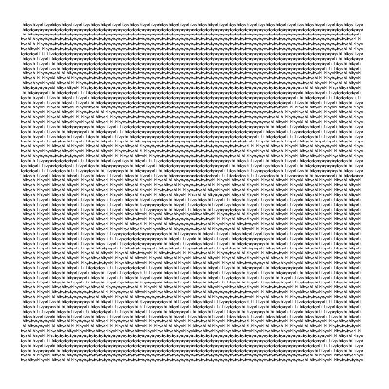</p> <figcaption>1-d cellular automata; same-rules; interpretation-4.</figcaption> </figure> --- class: middle <figure> <div class = "two"> </div> <figcaption>same system; different interpretations.</figcaption> </figure> --- class: middle ## same underlying base-system, but different 'software-interpretations'. --- class: middle left ## A 12" (30 cm) grid covering the black wall. ## Within each 12" (30 cm) square, a vertical, horizontal, diagonal right or diagonal left line bisecting the square. ## All squares are filled. (The direction of the line in each square is determined by the drafter). <figcaption>Wall Drawing #392 (1983), by sol lewitt.</figcaption> --- class: middle <figure> <p>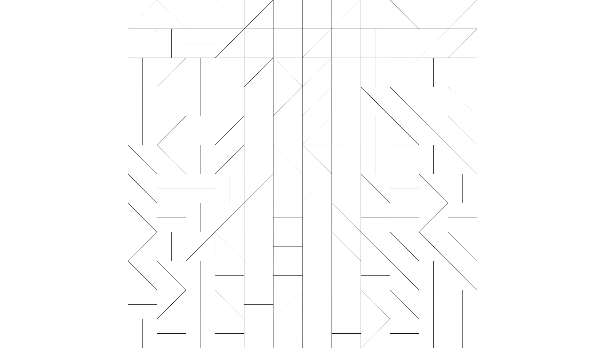</p> <figcaption>from <a href = "https://solvingsol.com/solutions" target = "_blank">solvingsol.com</a>, by mcshiz.</figcaption> </figure> --- class: middle <figure> <p>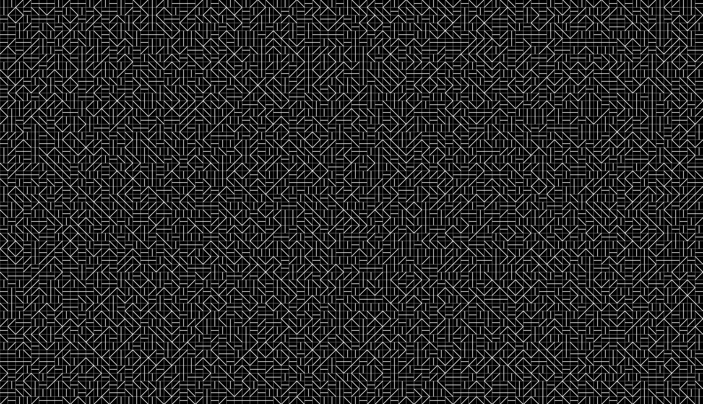</p> <figcaption>from <a href = "https://solvingsol.com/solutions" target = "_blank">solvingsol.com</a>, by 1wheel.</figcaption> </figure> --- class: middle <figure> <div class = "two"> </div> <figcaption>two interpretations of Wall Drawing #392 (1983), from <a href = "https://solvingsol.com/solutions" target = "_blank">solvingsol.com</a>.</figcaption> </figure> --- class: middle <figure> <p>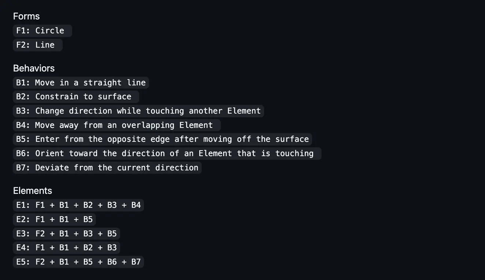</p> <figcaption>process compendium ruleset, by casey reas.</figcaption> </figure> --- class: middle <figure> <p>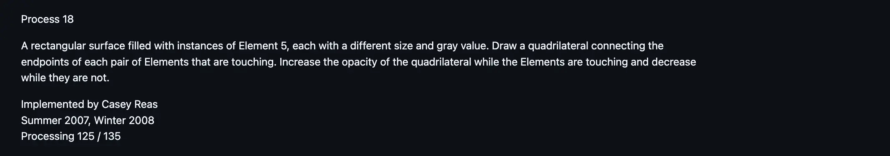</p> <figcaption>process 18, by casey reas.</figcaption> </figure> --- class: middle <figure> <img src = "https://www.bitforms.art/wp-content/uploads/2020/02/cr_process18_install_1_w-1170x585-1.jpg"> <figcaption>process-18, by casey-reas.</figcaption> </figure> --- class: middle <figure> <figcaption>process compendium ruleset, by casey reas.</figcaption> </figure> --- class: middle <figure> <video preload="yes" muted playsinline autoplay nocontrols loop> <source src="../assets/media/261001_emergence-study/12127641_2320_1080_30fps.mp4" type="video/mp4" /> your browser does not support videos. </video> <figcaption>people moving in new-york; from <a href = "https://www.pexels.com/video/bustling-new-york-city-street-scene-29598934/">pexels</a>, by karma rayshar.</figcaption> </figure> --- class: middle # base-system: --- class: middle ## there is a <mark>world</mark>, and it consists of many <mark>places</mark>. --- class: middle ## the world contains a <mark>population</mark> of <mark>beings</mark> — who are born, sustained, and killed over <mark>time</mark> by the world. --- class: middle <figure> <p>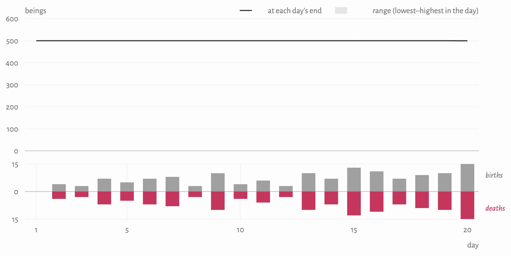</p> <figcaption>population, birth & death over time.</figcaption> </figure> --- class: middle <figure> <p>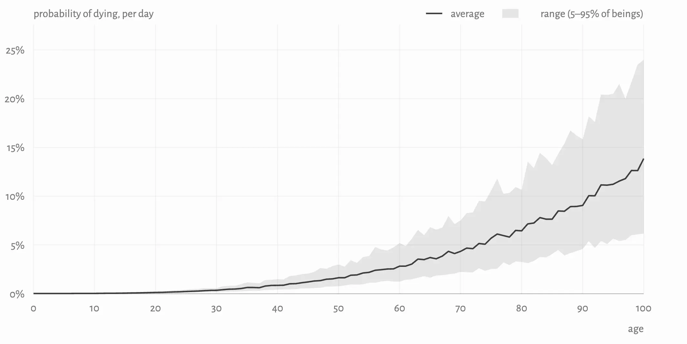</p> <figcaption>probability of beings to die, over time. rises quicker as you get older.</figcaption> </figure> --- class: middle ## the beings express life through <mark>movement</mark>, and movement is governed by a <mark>schedule</mark>. --- class: middle ## both the schedule & movement are governed by <mark>age</mark> (for eg: the closer you are to your 20s, the more likely you are to have a busier schedule (and thereby have to move more)). --- class: middle <figure> <p>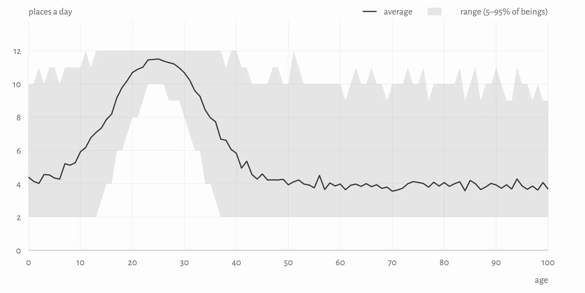</p> <figcaption>busyness, over age. likely to peak around 20-s.</figcaption> </figure> --- class: middle <figure> <p>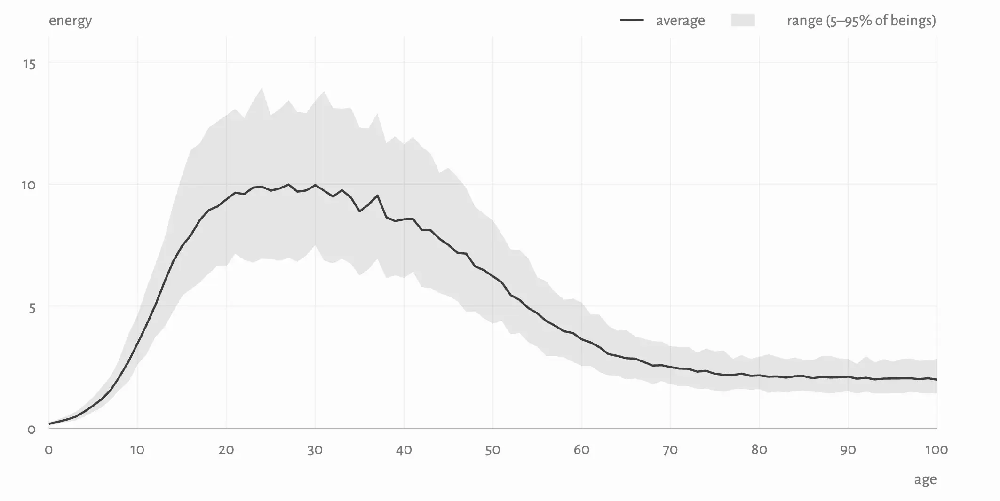</p> <figcaption>energy, over age. rises sharply in youth, plateaus, and dips with age.</figcaption> </figure> --- --- class: middle # software-interpretations: --- class: top ## software-interpretations are always written in english, and then realized by a constructed algorithm. each interpretation has the following: --- class: top ## .grey[software-interpretations are always written in english, and then realized by a constructed algorithm. each interpretation has the following:] ## - thought -> the core idea to express from the system. -- ## - expression -> technical details on extracting & representing relevant data from the system. -- ## - parameters: some software-interpretations may be computationally heavier than others. so, we may modify parameters of the system to realize them. --- --- class: middle # interpretation #1: born in pairs. ## beings are destined to be with someone that they were born close to (in proximity & age). however, as they live out their lives, they may be close or separated in the world. thought is borrowed from the red thread of fate. --- class: middle <figure> <p>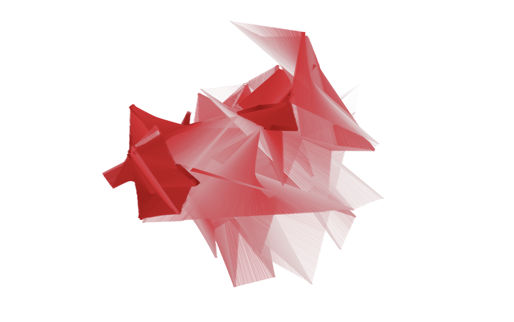</p> <figcaption>still from interpretation #1.</figcaption> </figure> --- class: top, left background-image: url("../assets/media/261001_emergence-study/interp-1.png") --- class: middle # interpretation #2: missed connections. ## we walk by so many people. when they are within a certain distance, we have a short window of time to connect with each other in physical-space, until we are distant again. --- class: middle # interpretation #3: all the world's a mesh. ## all beings are connected to each other via an invisible mesh. --- class: middle <figure> <p>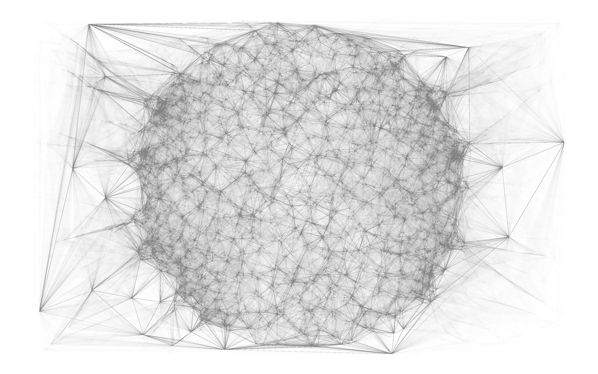</p> <figcaption>still from interpretation #3.</figcaption> </figure> --- class: top, left background-image: url("../assets/media/261001_emergence-study/3.1.webp") --- class: top, left background-image: url("../assets/media/261001_emergence-study/3.2.webp") --- class: top, left background-image: url("../assets/media/261001_emergence-study/3.3.webp") --- class: middle # interpretation #4: meetings are ripples. ## meeting people can be resounding. when two beings meet, a ripple is sent through space & time; that may affect other beings. --- class: middle <figure> <p>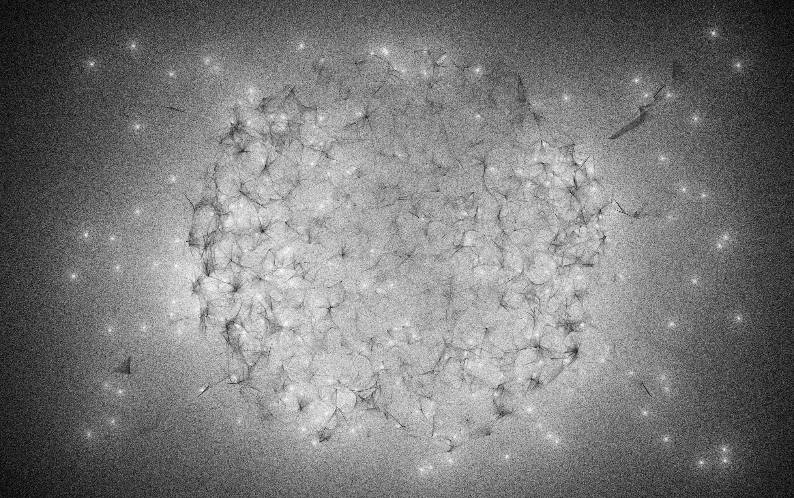</p> <figcaption>still from interpretation #4.</figcaption> </figure> --- class: top, left background-image: url("../assets/media/261001_emergence-study/4.1.webp") --- class: top, left background-image: url("../assets/media/261001_emergence-study/4.2.webp") --- class: middle # interpretation #5: the collective fabric of age & experience. ## beings age and morph into more experienced beings over time. as they grow older, more beings are affected by their experience. we all live in the collective fabric of each other's experience. --- class: middle <figure> <p>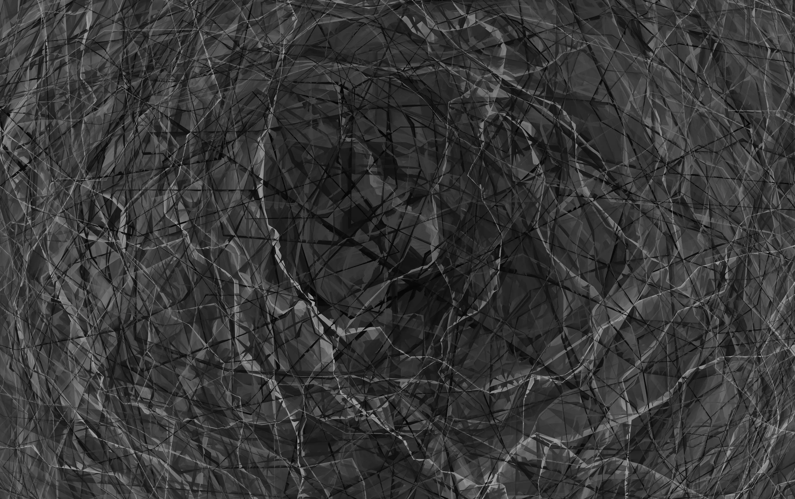</p> <figcaption>still from interpretation #5.</figcaption> </figure> --- class: top, left background-image: url("../assets/media/261001_emergence-study/5.1.webp") --- class: top, left background-image: url("../assets/media/261001_emergence-study/5.2.webp") --- class: middle # interpretation #6: separation. ## beings in different locations hold opposing views, and are separated over time. --- class: middle <figure> <p>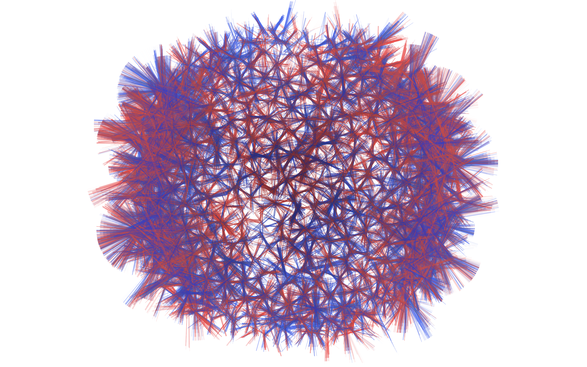</p> <figcaption>still from interpretation #6.</figcaption> </figure> --- class: top, left background-image: url("../assets/media/261001_emergence-study/6.1.png") --- class: top, left background-image: url("../assets/media/261001_emergence-study/6.2.png") --- class: middle # thank you. .footnote[arjunmakesthings.github.io<br>ay3020@nyu.edu]